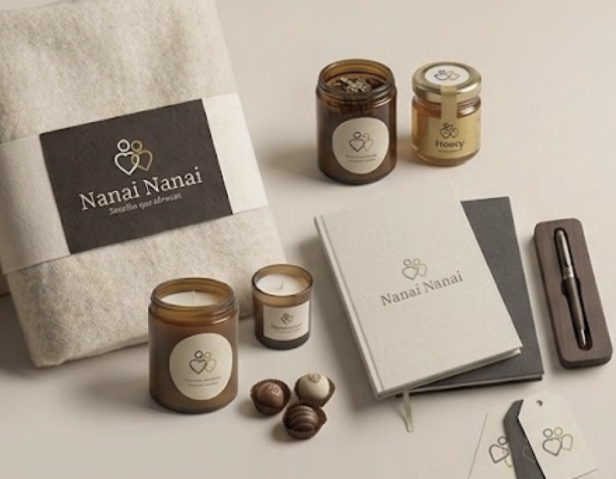
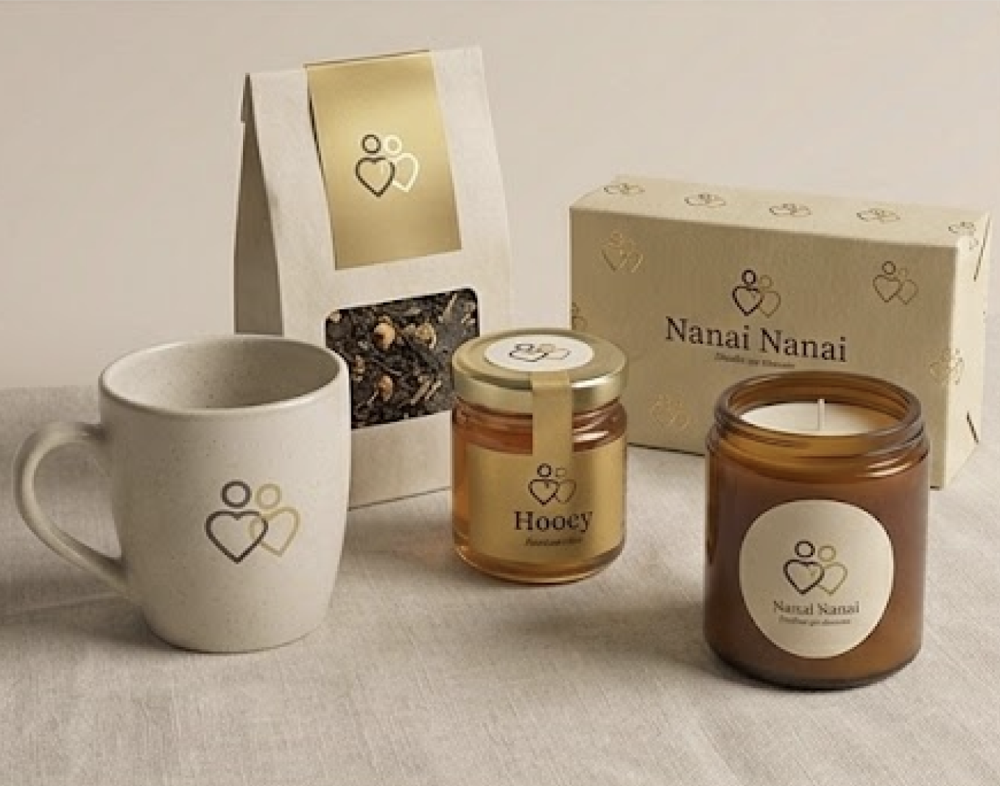
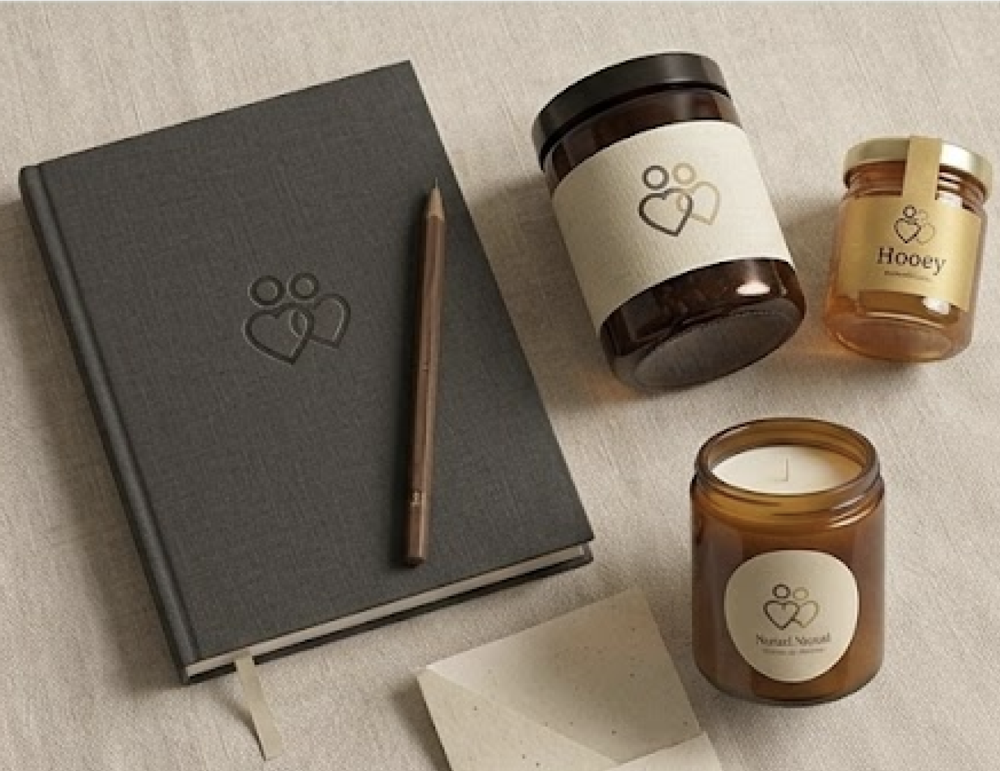
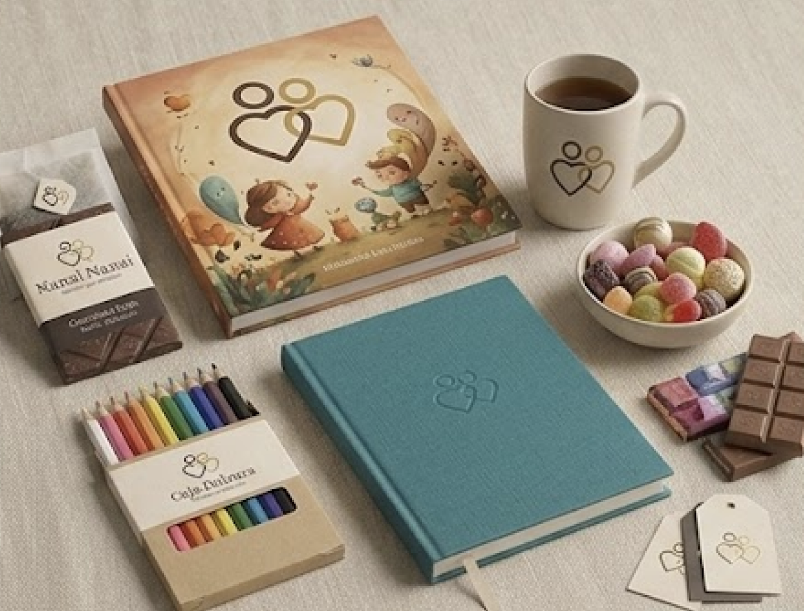
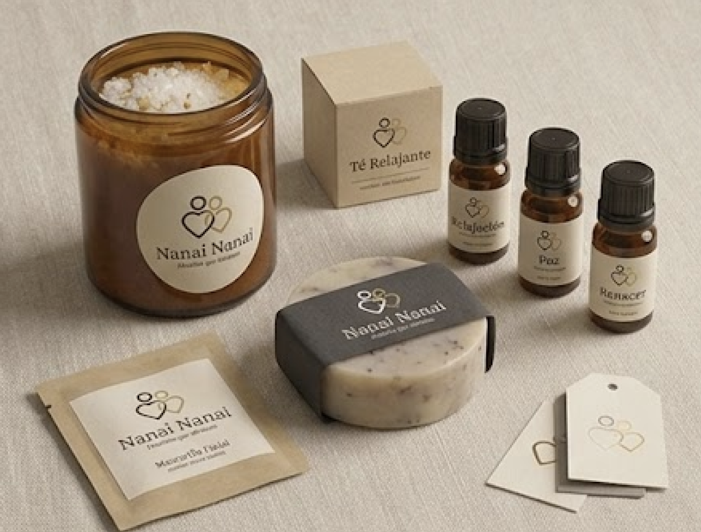
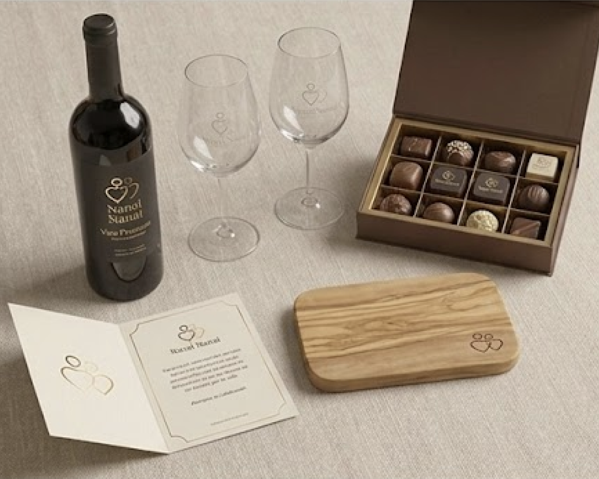
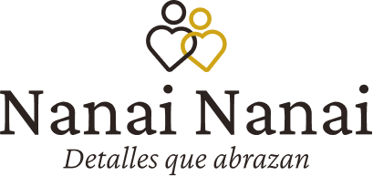

Caja Abrigo
Para momentos de pérdida, dolor o vulnerabilidad.
- Manta de alpaca
- Té
- Vela
- Carta
- Calcetines suaves
Sistema de Marca · Brand Hub
Marca premium de acompañamiento emocional a través de cajas sensoriales. Un lenguaje físico para los instantes en que las palabras no alcanzan.
En un mercado saturado de productos, Nanai Nanai existe para cubrir la brecha que los regalos convencionales no pueden llenar. No somos una tienda de regalos. Somos un lenguaje físico para los momentos en que las palabras no alcanzan.
Cada caja nace desde una pregunta: ¿qué necesita sentir quien la recibe? No qué quiere ver, ni qué quiere tener. Qué necesita sentir. Desde ahí se construye todo: el color del papel, el peso de la caja, el aroma que escapa al abrirla, la frase que encuentra adentro.
El nombre duplicado no es un accidente. "Nanai Nanai" es una decisión estratégica de categorización: creamos una categoría propia dentro del mercado y establecemos propiedad semántica donde otros solo tienen presencia genérica.

Tres frentes emocionales, un mismo cuidado — cada uno con su color, su tono y su ritual. Empieza por la emoción, no por el objeto.
Campaña · Contención
Una caja que no llega a alegrar. Llega a acompañar.
La colección
Cada caja reúne piezas escogidas para acompañar un momento. Mira lo que hay dentro de cada una.

Para momentos de pérdida, dolor o vulnerabilidad.

Para momentos de pérdida, dolor o vulnerabilidad.

Para momentos de pérdida, dolor o vulnerabilidad.

Para honrar y recordar.

Para honrar y recordar · Orientada a niños.

Para nuevas etapas y celebraciones.

Para nuevas etapas y celebraciones.
¿No sabes cuál elegir?
Empieza por la emoción, no por el objeto. Deja que el momento te guíe.
Las fronteras no negociables del posicionamiento. Cada una protege la integridad emocional de la marca.
No competimos en precio, variedad de SKUs ni velocidad de despacho. Competimos en profundidad de intención y precisión emocional.
No vendemos salud, hábitos ni productividad. Acompañamos emociones específicas en momentos específicos. El bienestar es consecuencia, no producto.
El premium viene de la intención y el cuidado editorial, no del precio de la caja ni del tamaño del moño. Lo que se percibe como lujoso es la atención al detalle emocional.
"La caja que sabe lo que el abrazo quería decir."
Un lenguaje físico para los momentos en que las palabras no alcanzan.
Sistema Visual
Ocho colores que no compiten entre sí. Cada uno cumple una función emocional precisa y tiene una razón para existir dentro del sistema.
Paleta completa
Paletas por territorio
Contención
Blush + Rosa Profundo
Memoria
Dorado + Café
Renacer
Salvia + Verde Profundo
Referencia de variables CSS
| Variable | Valor HEX | Nombre | Territorio | |
|---|---|---|---|---|
--color-blush | #F2D5D0 | Blush · Rosa Suave | Contención · Acento | |
--color-contencion-label | #A85A63 | Rosa Profundo | Contención · Etiqueta | |
--color-or | #C9A96E | Or · Dorado | Memoria · Acento | |
--color-memoria-label | #8A7355 | Café · Dorado Profundo | Memoria · Etiqueta | |
--color-sauge | #B5C9B2 | Sauge · Verde Salvia | Renacer · Acento | |
--color-renacer-label | #5A7D62 | Verde Profundo | Renacer · Etiqueta | |
--color-lavande | #D4CCE8 | Lavande · Lavanda | Reserva | |
--color-ciel | #C8DDE8 | Ciel · Celeste Claro | Reserva | |
--color-creme | #F5EDE3 | Crème · Beige | Reserva | |
--color-noyau | #9B7E6B | Noyau · Taupe | Base | |
--color-alabaster | #FAF8F5 | Alabaster · Fondo UI | Fondo base | |
--color-umbra | #2C2320 | Umbra · Oscuro | Base · Texto |
Principios de uso
El color como emoción
Cada color del sistema tiene una carga emocional deliberada. El Rosa Pálido no es "lindo" — es la temperatura visual de la suavidad en el duelo. El Dorado no es "lujoso" — es el peso del tiempo y lo que permanece. Nunca elegir un color por estética: elegirlo por lo que hace sentir.
El fondo respira
Alabaster (#FAF8F5) es el color que permite que todos los demás existan. Sin un fondo que respire, los colores emocionales pierden impacto. La regla: 70% Alabaster, 20% color de territorio, 10% acento. El espacio vacío es parte de la paleta.
Contraste accesible
Todo texto en colores de territorio usa Umbra (#2C2320) para garantizar contraste WCAG AA (mínimo 4.5:1). Los tintes de fondo (Blush, Oro y Sauge al 16–35% sobre Alabaster) son exclusivamente para superficies, nunca para texto corrido.
Dorado: el acento universal
Amber (#C9A96E) es el único color que cruza todos los territorios. Aparece en bordes activos, detalles de navegación y marcadores de calidad. Su uso debe ser escaso: si el dorado está en todas partes, pierde su significado de valor y permanencia.
Sistema Visual
Tres familias en equilibrio deliberado: la serenidad histórica de Cormorant Garamond, la claridad humanista de Manrope y la calidez manuscrita de Caveat. Emoción, estructura y contacto humano.
La caja que sabe lo
que el abrazo quería decir.
A B C D E F G H I J K L M N Ñ O P Q R S T U V W X Y Z
a b c d e f g h i j k l m n ñ o p q r s t u v w x y z
0 1 2 3 4 5 6 7 8 9 , . : ; " " … — &
Con cariño, para ti.
Usar en
No usar en: navegación, títulos de sección, párrafos de cuerpo, precios ni datos técnicos.
Territorio 02 · Memoria
Para honrar, recordar y celebrar lo que fue. La caja es un cofre de tiempo — cada objeto dentro tiene historia o invita a crearla.
Ver territorio completo
Principios tipográficos
Serif habla, Sans estructura
Cormorant Garamond carga el peso emocional: es la voz de la marca. Manrope organiza la información: su claridad humanista hace legible lo emocional sin frialdad técnica. Nunca usar ambas en el mismo nivel jerárquico.
El espacio es tipografía
El line-height amplio (1.65 en body) no es relleno — es respiración. Los textos de Nanai Nanai necesitan aire porque hablan de temas que lo necesitan. Apretar el texto es apretar la emoción.
La itálica es énfasis emocional
Cormorant Italic no es decorativa: es la inflexión de voz de la marca. Se usa para citas, taglines de territorio y momentos de máxima carga poética. Máximo una vez por bloque de contenido.
Sin negrita en titulares de marca
Los grandes titulares de la marca van en Cormorant 300 (Light). La potencia viene del tamaño y el espacio, nunca del grosor. Bold se reserva para énfasis dentro de cuerpos de texto, nunca para H1 o Display.
Marca
Líneas editoriales y visuales que segmentan la oferta sin fracturar la identidad madre. La marca es una — los territorios son sus tres idiomas.
Tabla comparativa
"Aquí estamos."
Para quienes atraviesan el dolor o la vulnerabilidad. La caja no alegra — la caja acompaña sin prescribir.
Reglas esenciales
"Porque hay momentos que merecen guardarse."
Para honrar, recordar y celebrar lo que fue. La caja es un cofre de tiempo — cada objeto tiene historia.
Reglas esenciales
"El umbral ya está cruzado."
Para quienes inician una nueva etapa. La caja abre horizontes sin imponer dirección ni urgencia.
Reglas esenciales
Territorio 01
"Aquí estamos, sin preguntas, sin recetas. Solo presencia."
La caja no alegra. La caja no cura. La caja acompaña. Y a veces eso es todo lo que se necesita.
¿Cuándo se usa Contención?
Paleta del territorio
Blush · Rosa Suave
#F2D5D0 · PMS 698 C
Rosa Profundo · Etiqueta
#A85A63 · Acento legible
Alabaster · Blanco Roto
#FAF8F5 · PMS 9122 C
Guía sensorial — ¿Qué puede incluir una caja Contención?
Vela de soja
Aroma lavanda-vainilla. Tiempo de quema: 30 h.
Té de manzanilla
Selección orgánica en bolsas de lino.
Pañuelo de gasa
Algodón orgánico. Lavanda seca cosida.
Carta manuscrita
En papel algodón. Sin moraleja al final.
Piedra de palma
Cuarzo rosa pulido. Para sostener.
Chocolate negro
85% cacao. Sin azúcares añadidos.
Tono de copy — Bien vs. Mal
Lo que sí diría Contención
"Aquí estamos. No hay nada que debas sentir. Solo lo que sientes."
Lo que nunca diría Contención
"¡Todo va a estar bien! Eres más fuerte de lo que crees. ¡Tú puedes!"
Lo que sí diría Contención
"No hace falta decir nada. Esta caja dice lo que las palabras no alcanzan a decir."
Lo que nunca diría Contención
"¡Envíale un regalo para levantarle el ánimo! ¡Con nuestra caja sorpresa va a sonreír!"
Señales prohibidas en Contención
Palabras clave del territorio
Estas palabras definen el universo semántico de Contención. Úsalas como referencia editorial.
Territorio 02
"Porque hay momentos que merecen guardarse en más de un lugar."
La caja de Memoria no celebra — honra. Y honrar es algo completamente distinto a celebrar.
¿Cuándo se usa Memoria?
Paleta del territorio
Café · Etiqueta
#8A7355 · Acento legible
Amber · Dorado Suave
#C9A96E · PMS 7509 C
Alabaster · Blanco Roto
#FAF8F5 · PMS 9122 C
Guía sensorial — ¿Qué puede incluir una caja Memoria?
Papel kraft premium
Hoja A5 envejecida. Para escribir lo que se quiere guardar.
Sello de cera
Kit con cera dorada y sello personalizado.
Marco artesanal
Madera de bambú. Para una foto que merece permanecer.
Rosa preservada
Seca en proceso artesanal. Sin perfume añadido.
Té de rooibos
Con miel de flores silvestres. Para el ritual de sentarse.
Cordón de lino
Para atar y guardar las cartas. Natural, crudo.
Tono de copy — Bien vs. Mal
Lo que sí diría Memoria
"Para guardar lo que fue. Porque algunos momentos merecen más que el recuerdo."
Lo que nunca diría Memoria
"¡Feliz aniversario! ¡Celebra con nuestro kit especial de regalo con envío express!"
Lo que sí diría Memoria
"Cuarenta años son una trayectoria. Esta caja los honra, uno a uno."
Lo que nunca diría Memoria
"¡El pack perfecto para el cumpleañero! ¡Sorpréndelo con este combo exclusivo!"
Señales prohibidas en Memoria
Palabras clave del territorio
Territorio 03
"El umbral ya está cruzado. Lo que sigue es tuyo."
Renacer no vende éxito. Vende la libertad de no saber aún adónde llevan los próximos pasos.
¿Cuándo se usa Renacer?
Paleta del territorio
Verde Profundo · Etiqueta
#5A7D62 · Acento legible
Sauge · Verde Salvia
#B5C9B2 · PMS 557 C
Amber · Dorado (toque)
#C9A96E · PMS 7509 C
Guía sensorial — ¿Qué puede incluir una caja Renacer?
Semilla para plantar
Lavanda o albahaca. Con tierra premium en sobre.
Cuaderno en blanco
Papel de algodón. Primeras páginas sin guías.
Jabón artesanal
Cítrico-herbal. Bergamota y salvia fresca.
Difusor de bambú
Con aceite esencial cítrico. Neutro y fresco.
Té verde fresco
Gyokuro japonés. Para el primer ritual del día.
Tarjeta de umbral
Con una sola frase. Sin instrucciones al respaldo.
Tono de copy — Bien vs. Mal
Lo que sí diría Renacer
"El umbral ya está cruzado. Lo que sigue no tiene nombre todavía — y eso está bien."
Lo que nunca diría Renacer
"¡Empieza con todo! ¡Define tus metas y conquista tu mejor versión este año!"
Lo que sí diría Renacer
"Una nueva etapa no comienza con un plan. Comienza con un gesto de cuidado hacia ti."
Lo que nunca diría Renacer
"¡Tu éxito empieza aquí! ¡Kit motivacional para emprendedores y triunfadores!"
Señales prohibidas en Renacer
Palabras clave del territorio
Fundamentos
Nanai Nanai opera desde la intersección de dos arquetipos que se complementan sin contradicción. Uno cuida — el otro ordena el cuidado.
Arquetipo 01
The Caregiver
Proteger
Motivación
Empatía
Expresión
Servir
Propósito
Lenguaje empático, envolturas suaves, instrucciones escritas en segunda persona. El cliente nunca se siente solo comprando. La experiencia de compra es parte del cuidado — no solo el producto.
Arquetipo 02
The Ruler
Control
Motivación
Elegancia
Expresión
Orden
Propósito
Diseño estructurado, paleta contenida, materiales premium, experiencia de unboxing ritualizada. La marca inspira confianza absoluta. La calidad no se declara — se experimenta en cada pliegue y en cada aroma.
Tono de voz — 4 dimensiones
Reglas de redacción
Vocabulario aprobado y prohibido
✓ Palabras que sí usamos
✕ Palabras que nunca usamos
Fundamentos
Control total sobre cada píxel. Dependencia cero de terceros. El mejor framework es el que no necesitas.
Tres pilares nativos
HTML5
Estructura semántica
WHATWG Living Standard. Sin template engines ni SSR frameworks. El markup semántico ES el diseño — roles ARIA, landmarks y headings correctos desde el inicio.
CSS Nativo
Presentación + Tokens
Custom Properties como sistema nervioso. Grid + Flexbox para layout. Sin Tailwind, sin Bootstrap. Cambiar un territorio es cambiar 2 variables, no 200 clases.
JS ES2022
Comportamiento mínimo
Módulos nativos. Sin React, Vue ni bundler. Si CSS puede hacerlo, CSS lo hace. El JavaScript existe para lo que el CSS no puede: routing por hash, clipboard API, eventos.
Zero Build
Deploy directo
El archivo sirve tal cual desde cualquier servidor estático. GitHub → Netlify. Sin webpack, sin Vite, sin dependencias en node_modules.
Estructura de archivos
Cómo las variables CSS controlan los 3 territorios
El mecanismo de herencia en cascada
Un atributo data-territory="contencion" en el contenedor redefine las variables de color. CSS propaga el cambio a todos los hijos automáticamente — sin modificar una sola clase de utilidad.
Roles del equipo
Design · Figma · Sistema
Editorial · Voz · UX Writing
Código · HTML · CSS · JS
clamp()Infra · CI/CD · Estático
Checklist de calidad — antes de hacer merge
Accesibilidad
alt descriptivo en todas las imágenes con contenidoPerformance
<head>font-display: swaploading="lazy" excepto hero y above-foldCódigo
!important (excepto override documentado)console.log ni código de debug en producciónnpm installRoadmap
v1
v2
v3
prefers-color-schemev4
Sistema Visual
El logotipo combina un isotipo — dos formas entrelazadas que evocan un abrazo — con un wordmark serif de trazo clásico. Versión principal, archivos de descarga listos para producción y ejemplos del logo aplicado.

Archivos disponibles
Cinco construcciones — logomark, apilado, horizontal, wordmark y square — cada una en sus modos cromáticos. Elige el modo, la bajada si aplica y el formato: el SVG es vectorial para producción; el PNG está listo para pantalla.
Color = Umbra + Oro · Gris = escala de grises · Invertida = blanco + Oro (fondos oscuros) · Blanco = blanco sólido (fotografía y fondos de color). Square suma Monocolor y Color-dark. Para PDF vectorial o CMYK, solicítalos al equipo de marca.
Sistema Visual
La fotografía de Nanai Nanai retrata el gesto, no el producto: manos que se sostienen, abrazos, la cabeza que descansa en un hombro. Luz natural y suave, encuadres cercanos, presencia humana real. Este moodboard es la referencia viva curada en Unsplash.
Dirección de arte
Contacto físico y consuelo: abrazos, manos que sostienen, miradas bajas. Tonos cálidos y sombras suaves. La emoción es la protagonista, nunca el objeto.
El detalle que guarda una historia: un anillo, manos entrelazadas, texturas de piel y tela. Planos cerrados, quietud, luz de tarde.
Apertura y aire: naturaleza, luz que entra, cuerpos que se yerguen. Encuadres con espacio negativo y horizonte. Calma que anticipa un nuevo comienzo.
Moodboard · Colección Unsplash
Ver colección completa en Unsplash ↗


Fotografías de la colección Nanai Nanai en Unsplash. Cada imagen se enlaza directo al CDN de Unsplash con atribución a su autor, según sus lineamientos de uso. No se alojan copias en el repositorio.
{kind=link}
{kind=link}
{kind=link}
{kind=link}
{kind=link}
{kind=link}
{kind=link}
{kind=link}
{kind=link}
{kind=link}